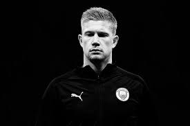

Hockey legend Dhyan Chand is truly a player who comes once in a century. His prowess with the stick literally made Adolf Hitler watch in awe as he demolished the German hockey team in front of him. Such was his charisma and flair. So much so that the Fuhrer offered him the post of Colonel in his Nazi army which Dhyan declined.
Under his presence, India won three Olympic gold medals consecutively from 1928 to 1936. He scored more than 1000 goals in his career from 1926 to 1948. He was bestowed with the title of “The Wizard” because of it.
2. Sohail Abbas (Pakistan)
Sohail Abbas is considered a genius creation of Pakistan. He is the highest scorer in modern field hockey. Sohail is the first person in history to reach the 300-goal mark.
He is the fastest to score 100 goals and 200 goals barrier in international hockey history. Sohail is regarded as the greatest flicker for his 65% drag-flick conversion rate. He also holds the record for most goals scored in a single calendar year for his 60 goals in 1999. Abbas is the only person in history to score 21 hat tricks and even a double hattrick in international games.
3. Ric Charlesworth (Australia)
Field hockey player and coach Ric Charlesworth led his national team to victory in the World Hockey Cup in London in 1986. He was named Western Australian Sportsman of the Year a record three times. He also received the Western Australia Citizen of the Year Award in 2001. Ric was inducted into the Australian Hockey Hall of Fame in 1987
With that, he became the second player to achieve that honour. He was also inducted into the Hall of Champions in Western Australia in 1995.
4. Hassan Sardar (Pakistan)
Hassan Sardar won the gold medal and led his Pakistan men’s national team to victory in the 1984 Summer Olympics in Los Angeles as the captain. Sardar participated in his first World Hockey Cup in Mumbai in 1982. There he proved himself as the best centre forward Pakistan has ever produced. He won the very first world cup he played in 1982. Besides, he also achieved the man of the tournament for scoring 11 goals.
Sardar was also marked for his major contribution to crushing India with a score of 7-1 in the 1982 Asian Games in New Delhi. He achieved a hattrick on that occasion.
5. KylianMbappé
Age: 30
Test caps: 118
Nation: Australia
Club: Waratahs
Very few players, if any, throughout the world of rugby exude leadership, passion and dedication like Michael Hooper does whenever he plays for the Wallabies. Australia has enjoyed limited success since their golden era of the 1990s and early 2000s came to an end, but rugby’s youngest test centurion has constantly provided his nation and teammates with a source of inspiration every time he takes to the field at test level. That didn’t change in 2021, a year of which he earned a World Rugby Player of the Year nomination, and one could argue Hooper can feel hard done by that he wasn’t the outright winner of the award.

6. Kevin De Bruyne
Age: 28
Test caps: 59
Nation: New Zealand
Club: Hurricanes
In a year where the All Blacks struggled to reach the lofty goals they expect of themselves, Ardie Savea stood head and shoulders above his peers as the best New Zealand had to offer. The unrelenting loose forward’s powerful ball-carrying, committed defence and immense work ethic have made him an integral player for the Kiwis, as reflected by his captaincy appointment for the Rugby Championship. If the All Blacks are to reclaim the World Cup next year, Savea will be pivotal to their chances of success.
7. Virgil van Dijk
Age: 22
Test caps: 23
Nation: France
Club: Toulouse
One half of an all-star French halves combination, Romain Ntamack continues to emerge as one of rugby’s most promising young players. Still only 22-years-old, Ntamack has acted as a pillar of France’s recent rejuvenation in test rugby, having starred in a variety of matches from the No 10 jersey. Although he only played five tests this year, the class and quality of the Les Bleus star catapults him high up the rankings in an indication of his influence in the French set-up.
8. Sadio Mané
Age: 28
Test caps: 26
Nation: South Africa
Club: Sharks
A core member of South Africa’s 2019 World Cup-winning side, Lukhanyo Am continued to blossom into one of the game’s most dependable midfielders this year. Rock-solid on defence and supremely adept with ball in hand, Am has become a staple of the Springboks backline and has formed a tired and trusted midfield combination with Damian de Allende. With the World Cup just a year away, Am is set to play a crucial role in South Africa’s chances of retaining the Webb Ellis Cup.
9. Riyad Mahrez
Age: 27
Test caps: 57
Nation: England
Club: Saracens
Having been among the world’s premier players for some time now, Maro Itoje enjoyed another fruitful season in 2021. The veteran lock was a shining light in England’s below-par Six Nations campaign to become a regular test starter for the British and Irish Lions on their tour of South Africa. Itoje then capped off his year with a string of standout showings as England swept the Wallabies, Springboks and Tonga in the Autumn Nations Series.
10. ErlingHaaland
Age: 23
Test caps: 13
Nation: New Zealand
Club: Crusaders
With 15 tries in 11 tests, it’s easy to understand why Will Jordan was crowned World Rugby Breakthrough Player of the Year in 2021. Blessed with speed, vision and footwork, it became common nature to see the young wing slide through and around defences to run in try after try – five of which were scored in a single test against Tonga. Now a first-choice selection on New Zealand’s team sheet, another big year beckons for Jordan in 2022 as he looks to maintain his immaculate strike rate.